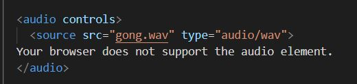
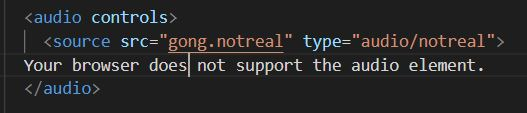
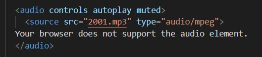

Blog Entry #7
11/4/2021
Interactive Sounds
My blog is too quiet. So, this week I want to learn about adding sounds to a site.
There are some HTML tags that make this easy. You can use your browser's audio controls to play a sound (may be loud):
The supported filetypes are mp3, wav, and ogg. If there is a problem with the audio or your browser can't play it, the controls will grey out or it might display an error message:
You can set a track to autoplay as soon as the site is opened. Some browsers outright prevent this, others allow it, and others still only let sounds autoplay if they start out muted.
You don't have to use the browser controls, though. You could recreate your own if you wanted to with CSS and JS. For now, this button does the trick:
Audio seems to be used sparingly in modern web design. I can vaguely remember link clicking sound effects and email swooshes, but the time of random noises seems to be over. You should really only use sounds for important notifications or if you really need to use them, like in a music or podcast app.